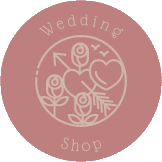

<mat-toolbar class="navbar"  [ngClass]="{'navbar-fixed': isFixedNavbar}">
  <div class="container" fxLayout="row wrap" fxLayoutAlign="start center">
     <div class="navbar-mobile-top" fxLayout="row" fxLayoutWrap="wrap" fxLayoutAlign="start center">
        <div class="navbar-logo">
           <a routerLink="/home"></a>
        </div>
        <button mat-icon-button color="accent" class="navbar-toggle" (click)="toggleNavbar()">
           <mat-icon>{{!navbarOpened ? 'menu': 'close'}}</mat-icon>
        </button>
     </div>
     <div fxFlex class="top-navbar" (click)="toggleNavbar()">
        <span fxFlex></span>
        <a mat-button  class="navbartop-btn" routerLink="home">Kezdőlap</a>
        <a mat-button  class="navbartop-btn" routerLink="shop">Termékek</a>
        <a mat-button  class="navbartop-btn" routerLink="shoppingcart">Kosár</a>
        <a *ngIf="userInfo == false" mat-button  class="navbartop-btn" routerLink="signup">Bejelentkezés</a>
        <a *ngIf="userInfo == true" mat-button  class="navbartop-btn" routerLink="logout">Kijelentkezés</a>
     </div>
  </div>
</mat-toolbar>